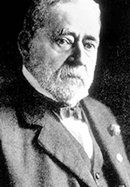
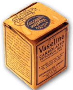
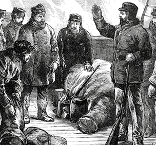
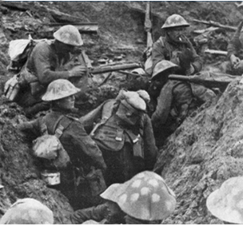
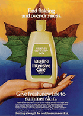
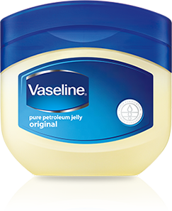
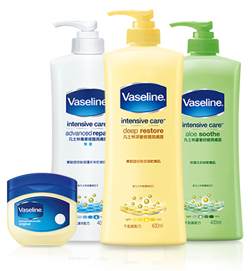

凡士林發明人
Robert A. Chesebrough
Robert A. Chesebrough 在礦油場上意外發現了能具有修護的油脂，
進而研發凡士林 Petroleum Jelly 。從戰場的戰士到新生兒的皮膚，
140多年來，Vaseline®產品持續守護著大家的肌膚。
如今，Vaseline®產品熱銷遍布90多國，更推出各種肌膚滋潤產品，
將Vaseline®產品修護微因子加入旗下乳液當中，
幫助更多人擁有健康的美麗肌膚。

1865
RobertA.Chesebrough 研發出 凡士林 Petroleum Jelly

1909
登上地球極點第一人 RobertPeary 探索北極點時，帶著 Vaseline®產品， 因為 Vaseline®產品不會在北極結凍。

1917 / 1943
一次及二次大戰軍人用 Vaseline® 產品修護乾燥肌膚。

1969
第一瓶 Vaseline®產品乳液問世。
1987
Vaseline®產品加入聯合利華 (Unilever)， 成為旗下受歡迎品牌之一。

2005
每39秒就有一瓶 Vaseline®產品在世界某個地方被賣出。

現今
Vaseline®產品熱銷遍布90多國，
更推出各種肌膚滋潤產品，
將 Vaseline®產品修護微因子加入旗下乳液當中，
幫助更多人擁有健康肌膚。